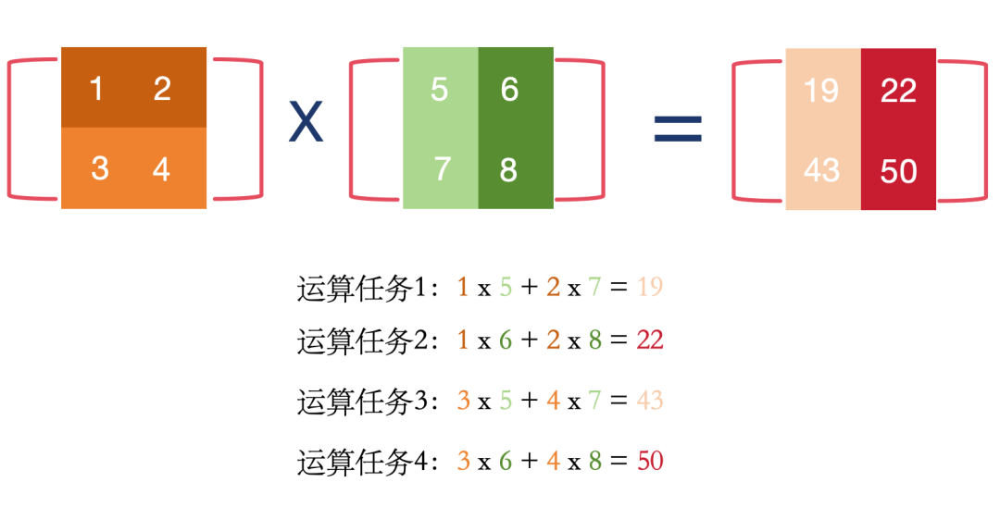
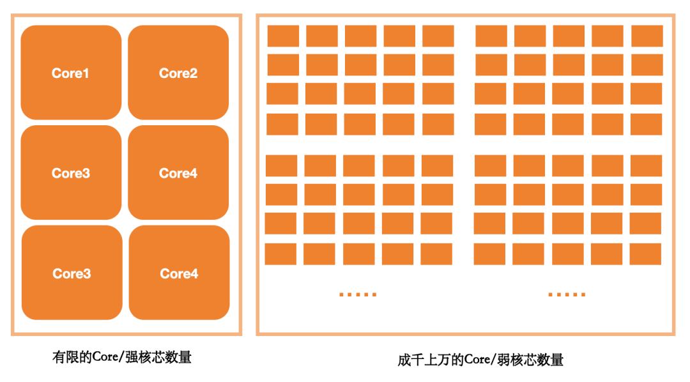

"我们应该专注研究如何增强人的能力，而不只是增强人工智能"。--图灵奖得主 拉吉·雷迪
我们先来看一个 AI 领域的相关报道：
"12月26日，圣诞节刚过，深度求索发布了大模型DeepSeek V3，成为2024年AI界真正的压轴事件。发布即开源，先看它有多酷：达到开源SOTA，超越Llama 3.1 405B；它的参数量约为GPT-4o的1/3，价格仅为Claude 3.5 Sonnet的9%，性能却可以和这两家顶级闭源大模型掰手腕。
整个训练过程仅用了不到280万个GPU小时，相比之下，Llama 3 405B的训练时长是3080万GPU小时（注：Llama用的是H100，DeepSeek用的是其缩水版的H800）。每秒生成60个token，是其上一个版本的3倍。算下来训练671B的DeepSeek V3的成本仅为557.6万美元，也就是说，任何一家初创公司都负担得起。"
这是一篇有关于 AI 领域大模型新进展的报道，DeepSeek V3，这个大模型的诞生宣告了普通中小型初创公司也能自己训练模型，至于报道中提到的 SOTA、llama3.1、405B 又是什么意思呢？以及GPU是什么？token 又是什么？🤔
解释这些问题都离不开一个主题，即模型。
什么是模型？如果抛开任何有关于 AI 的知识，用类比和联想的方法，"模型"二字让你最先想到什么？
对于 70、80后这一代人，可能听得最多的有关于模型的认知，是有关于生产制造行业的模型和模具，比如"这把菜刀要生产，请先搞个模出来嘛"、"造你这个玩具，可能要先搞模具哦"，甚至有专门的模具设计专业。
而对于 90、00后，有关于模型的接触，学渣首先想到的可能是王者荣耀、原神里面的模型，学霸首先想到的可能是有关于建模的知识，特别是数学/生物领域，比如描述人口增长的曲线模型、种群增长的J/S曲线模型。
以上有关于模型的现实案例都有一个共同点，都是对于现实世界中事物和现象进行观察和提炼，然后将这些提炼到的结果，比如一些规律或者知识，"集成"到一个小"系统"，这个小系统我们称之为模型，然后使用这个模型去再套用和再利用，比如用模具去再生产、比如用 J/S曲线模型去再推导新环境的环境容量。
S曲线就是一个模型，既然S曲线是模型，推广一下，直线可以是模型吗？
答案是可以。我们就从最简单的"模型"，一元一次函数说起，首先声明一点，我们的门外汉学AI系列，绝对不涉及高级的，难以理解的数学知识，毕竟AI这门技术绝不应该只被拥有博士这样的高学历的人士所掌握，它应该是普惠的，大众都可以使用的，我普及 AI的一个目标是，上过初高中的人都应该能学得会。
言归正传，$y = kx + b$，这个函数相信只要上过初中的都应该认识，里面的k是系数，b是截距。
说到这里，我们甚至在狭义范围内可以理解AI模型其实就是"函数"。
而所有"函数"里面涉及到的 $k$ 和 $b$ 其实就是我们平时在各种大模型相关新闻中听到的模型参数，没什么神秘的，看似高大上的东西，其实没什么大内涵，别被吓到了。
只是 AI模型中的参数在数量上可能会更多，它可能是多元多次的函数，也就是不止一个未知数 $x$，可能有 $x_1$、$x_2$、$x_3$... 次数也可能不止1次，可能是2次方，3次方，4 次方，也可能不止 1 个参数 $k$，可能有 $k_1$、$k_2$、$k_3$ 等，也可能不止 1 个截距 $b$，可能有 $b_1$、$b_2$、$b_3$ 等。
这里说明一下参数 $k$ 在 AI 领域一般写作 $w$，就是英文 weight 的首字母缩写，即权重。而 $b$ 是英文 bias，即偏置的缩写。
为了继续加深对于模型的理解，我们用这样一个简单的问题来启发：假设现在有5个学生，他们平时的学习时刻、出勤率、作业完成率、期末成绩的数据如下表，请你现在找到这些数据之间蕴含的规律🤔。
| 学号 | 平均学习时刻 | 出勤率 | 作业完成率 | 期末成绩 |
|---|---|---|---|---|
| 001 | 10h | 0.6 | 0.8 | 80分 |
| 002 | 8h | 0.4 | 0.5 | 50分 |
| 003 | 20h | 1 | 1 | 150分 |
| 004 | 18h | 0.7 | 0.9 | 110分 |
| 005 | 15h | 0.8 | 0.8 | 115分 |
根据生活经验，你很快就能推测出来：学习时刻、出勤率、作业完成率是影响期末成绩的因素，期末成绩是最终的结果，所谓一分耕耘，一分收获。
虽然有这个初步的判断，但你却还不知道这些自变量（学习时刻、出勤率、作业完成率）和因变量（期末成绩）的之间确切关系。
由于是有关于自变量和因变量之间的关系问题，因此你灵光一闪，想到初中的时候学习的数学知识，可以使用多元函数来表达（多个未知数）。
$y$ = $k{_1}x{_1}$ + $k{_2}x{_2}$ + $k{_3}x{_3}$ + $b$
或者我们使用以下公式来表示 ：
$y = w{_1}x{_1} + w{_2}x{_2} + w{_3}x{_3} + b{_1} + b{_2} + b{_3}$
其中 $x₁$ 代表学习时刻，$x₂$ 代表出勤率，$x₃$ 代表作业完成率，$y$ 代表期末成绩。
虽然你还不知道参数 $w$ 和偏置 $b$ 具体是多少，但这就已经可以看做是一个"模型"了，它将一件事物（学生的期末考试）转化为一组"数字"，然后再利用数学知识和模型训练的技巧，寻找这些数字中"蕴含的规律"（找出 $k$ 和 $b$ 具体的值），从而找到模型的具体形式，然后再应用这个模型，完成一些人类想要做的事情，比如"预测"其他学生的成绩。
而AI模型，就是通过观察人类的"行为"，比如观察和学习人类的语言文字，找到其中蕴含的规律（狭义依然可以理解为寻找函数的结构和确定参数 $w$ 和 $b$ ），从而发展出了自然语言处理（NLP）技术，又比如观察和学习人类的视觉行为，发展出了计算机视觉（CV）技术。
而我们现在爆火的大模型，就是 NLP 领域的模型，它的全称是 Large Language Model，简称 LLM，它跟以往的模型的不同之处主要有以下几点：
以往的模型参数量大多数不会超过1B，也就是 1*10亿，而现在的大模型，1B 已经是很小的规模了，动不动几十B 已经很正常了，几千B 参数量的模型也已经出现了，llama3.1 这个模型是脸书公司开源的一个大语言模型，它的参数量达到了 405B，也就是 4050 亿个参数（即 405 × 10 亿），而我们上面提到的三元一次函数，才三个参数，可想而知，大模型得有多大。
我们上面对于模型的介绍中提到过，模型的训练是需要利用数据的，我们上面的这案例总共才 9 条数据，对于计算机来说，要处理起来真是太容易了，但是你知道训练 llama3.1 用了多少数据吗？据悉，Llama 3使用了15万亿个tokens（即15T）的数据进行训练，可想而知，运算规模得有多大。
注：在自然语言处理（NLP）任务中，tokens 通常指的是文本中的单词、标点符号或其他符号，后面深度学习章节将会介绍。
要用15T这么多数据进行训练，一台机器肯定处理不过来，你想我们平常用的电脑的内存才多大，撑死 32G 了，而且 32G 的数据做计算（加减乘除），肯定很慢。
我们知道CPU是由很多"高级指令"集成的，有几颗～几十颗左右的高性能核芯，但它不适合做大规模数据的"低级运算（加减乘除）"，什么是大规模的加减乘除的低级运算？
其实也很好理解：我们以矩阵乘法为例。
什么是矩阵乘法？其实就可以理解为excel中的两个表格相乘，首先理解一下什么是矩阵乘，看下面这个例子：

这四个运算任务想表达的意思就是说每个矩阵的对应的行，乘以对应的列：
注：把这个矩阵运算的例子看成是具有4个计算任务的矩阵乘，CPU因其核芯数量有限，只能一个一个任务执行，称为串行计算，而GPU因其有多个小核芯，因此可以同时执行4个任务，这就是我们常说的GPU可以并行计算。
而我们平时的计算机应用，比如 QQ，数据都很简单，一些聊天消息文字也不多，不涉及什么处理，就是做一些逻辑判断，比如判断发送消息的人是谁，然后显示在对应聊天框里面，所以 CPU 很适合做逻辑控制，是"智力密集型"作业。
而 GPU 适合做矩阵运算，因为它内部有几百到几千个不等的低性能核芯，每个核芯负责一小部分矩阵运算，这些低性能核芯同时工作，就发挥了并行计算的优势，你可以粗略理解为，很多低级打工崽，同时做简单重复的事情，就是一种"劳动密集型"作业。
下面是一副简图，比较清晰明了的体现出了两种算力设备的区别。

说完了 CPU 和 GPU，你应该能够知道为何训练一次大模型会用到这么多的 GPU 显卡，因为数据量太大了，参数太多了，因此需要运算的矩阵乘法次数是几何级数爆炸式增长。
现在也就不难理解文章开头提到的：整个训练过程仅用了不到280万个GPU小时，相比之下，Llama 3 405B的训练时长是3080万GPU小时（注：Llama用的是H100，DeepSeek用的是其缩水版的H800）
需要注意的是，GPU 小时是算力工时单位，即一块 GPU 运行一小时所完成的计算量，因此 280 万 GPU 小时并不等于 280 万块 GPU 显卡，3080 万 GPU 小时也不等于 3080 万块 GPU 显卡--它衡量的是整体的计算工作量，而不能直接换算成显卡数量。换句话说，我们不能简单地把 GPU 小时数乘以单块显卡的价格来估算硬件成本。不过即便如此，DeepSeek 仅用了不到 280 万 GPU 小时就完成了训练，而 Llama 3 405B 耗费了 3080 万 GPU 小时，两者算力工时相差十倍以上，确实大幅拉低了训练成本。要知道之前都是互联网巨头才能玩得起大模型，而现在成本砍到这么低，中小型公司也开始能玩得起了，这就是为何 DeepSeek R1 一推出就成了爆炸性新闻。
模型：对现实世界中的实体或现象进行简化和抽象，将得到的规律用模型作为载体，以便更好地理解和预测。
AI模型：AI模型是基于算法和数据学习而得到的计算模型，能够模拟人类智能行为并解决特定智能任务。
参数：模型参数是在构建数学模型或机器学习模型时，用于描述模型特征、控制模型行为的一组数值或变量。
大模型：大模型是指具有大规模参数和复杂计算结构的AI模型，用于处理复杂任务和数据。
SOTA ：是英文 "State of the Art" 的缩写，直译为"当前技术水平"或"最先进技术"。在人工智能（AI）及相关技术领域（如计算机视觉、自然语言处理等），SOTA 特指 某一特定任务或领域中当前性能最优的算法、模型或技术解决方案
GPU：即图形处理单元（Graphics Processing Unit），是一种专门设计用于高效并行处理大量数据的处理器，尤其擅长图形渲染和复杂计算任务。